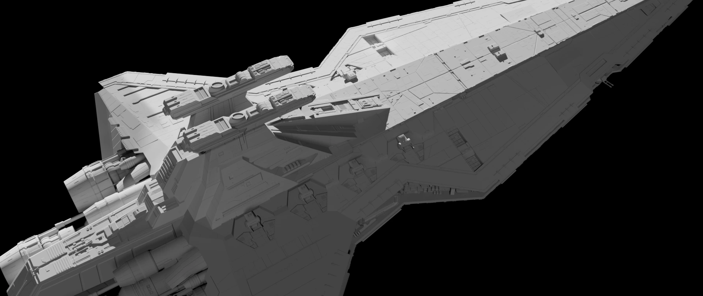
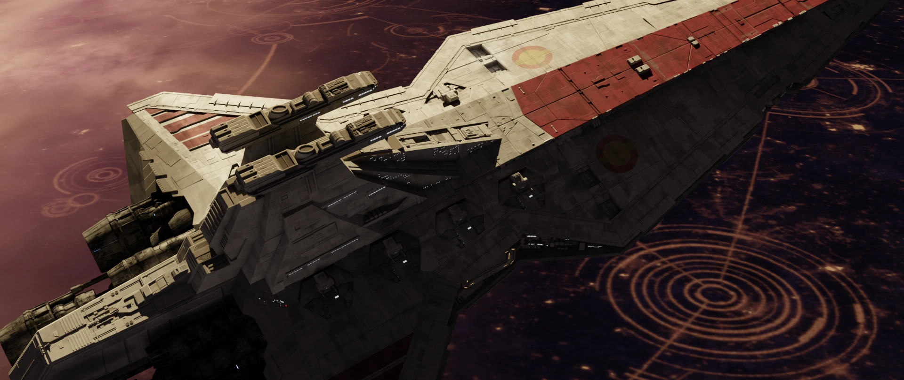
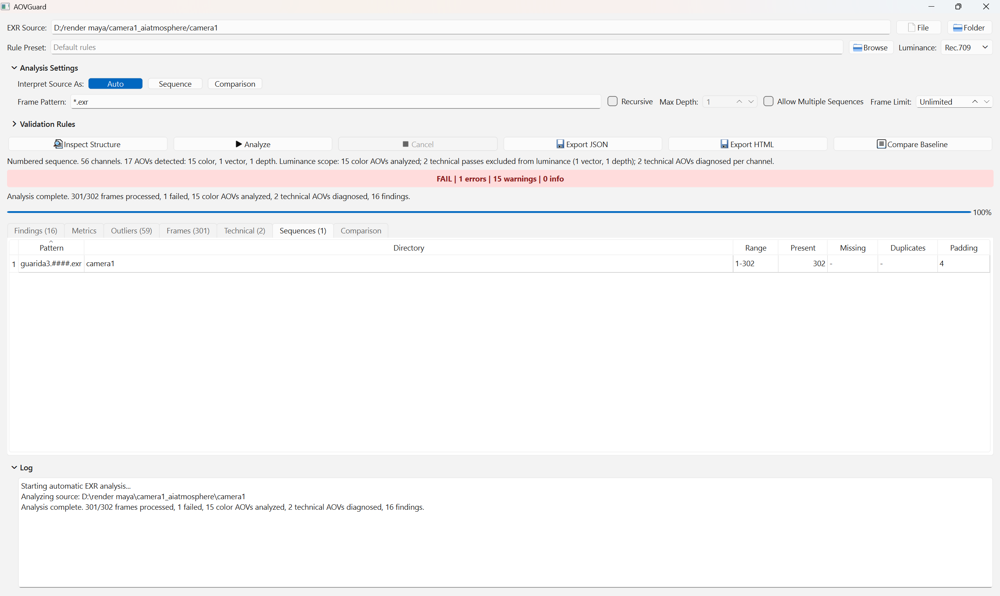
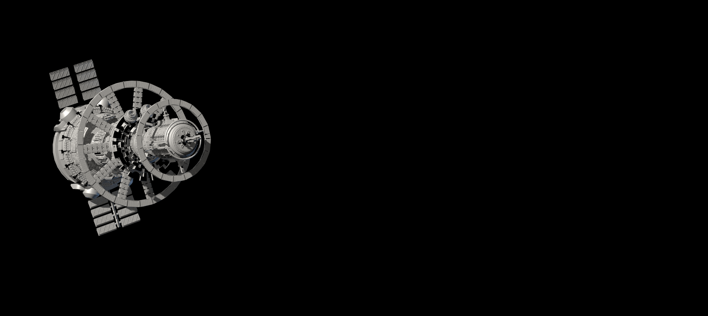
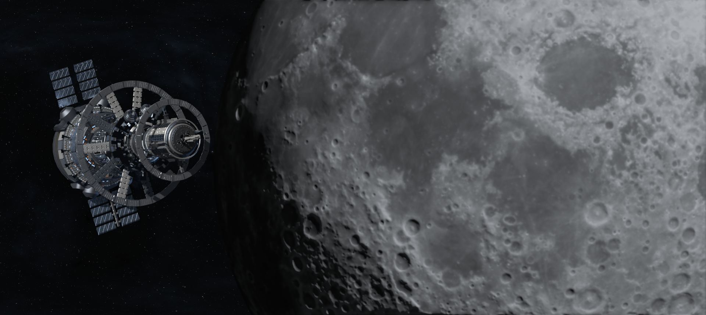
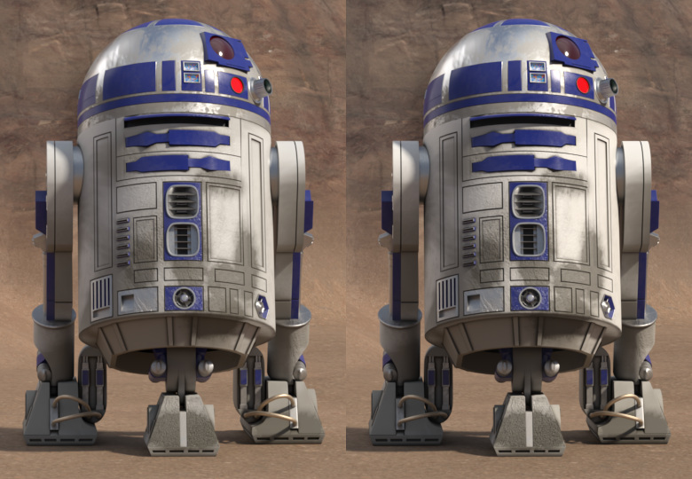

01 Venator Above Coruscant
Open breakdown ↗Available · 2026
Portfolio 2026 · Lighting / compositing / pipeline
Crafting cinematic light, final-frame composites and reliable tools for high-end visual effects.
The principal reel: lighting, look development, cinematography and visual effects.

The embedded player is unavailable. Watch the principal showreel on Vimeo.
Watch on VimeoEXPLORE THE PROJECTS
See the work and my specific contribution in these case studies.
SpaceshipLook development · lighting · rendering · compositing Broken HorizonsLighting · cinematography · rendering Norwegian LakesideLighting · look development · composition Snowbound EnvironmentLighting · camera · colour correctionShot lighting, look development
and the tools behind the render.
LIGHTING · LOOK DEVELOPMENT
My role Lighting · look development · rendering · compositing
A single-frame sunset study, from material and light diagnostics to the final Nuke composite.
Katana · RenderMan · Nuke
 LIGHTING TD · LOOK DEVELOPMENT
LIGHTING TD · LOOK DEVELOPMENT
My role Look development · lighting · rendering · compositing
A 360-frame USD shot with RenderMan AOVs, production diagnostics and a controlled Nuke finish.
Blender · USD · Katana · RenderMan · Nuke · Python
 LIGHTING TD · LOOK DEVELOPMENT
LIGHTING TD · LOOK DEVELOPMENT
My role Look development · lighting · rendering · compositing
A complete shot workflow with procedural weathering, RenderMan AOVs and a controlled Nuke finish.
Maya · Katana · RenderMan · OSL · Nuke · Python
 LIGHTING & LOOK DEVELOPMENT
LIGHTING & LOOK DEVELOPMENT
My role Lighting · cinematography · rendering
A group cinematic exploring overcast light, atmospheric depth and visual storytelling.
Unreal Engine · Lumen · Movie Render Queue

PIPELINE DEVELOPMENTMy role Product design · pipeline architecture · Python development
Open-source EXR/AOV validation with Cryptomatte-aware diagnostics, temporal outliers and sequence QA.
Python · OpenEXR · NumPy · PySide6 · pytest
 ENVIRONMENT LIGHTING
ENVIRONMENT LIGHTING
My role Lighting · look development · composition
Natural daylight, reflective water and a warm visual rhythm across a Nordic retreat.
Lighting · Look Development · Composition
 ENVIRONMENT LIGHTING
ENVIRONMENT LIGHTING
My role Lighting · camera · colour correction
Winter daylight, atmospheric depth and a cinematic grade for a mountain landscape.
Unreal Engine · DaVinci Resolve
 LIGHTING & RENDERING
LIGHTING & RENDERING
My role Procedural geometry · materials · lighting
Exploring realism through surface detail, materials and light.
Python · RenderMan · RIB · HDRI
 01 · MAYA SCENE
01 · MAYA SCENE
 02 · ARNOLD BEAUTY
02 · ARNOLD BEAUTY
 03 · EXR VERIFIED
03 · EXR VERIFIED
My role Python development · Maya integration
Preflight, Arnold rendering and EXR verification inside Maya.
Python · Maya · Arnold · OpenImageIO
 RENDERING ENGINEERING
RENDERING ENGINEERING
My role Renderer development · PBR shading
A CPU renderer evolved into a physically based metallic look-development tool.
Python · NumPy · Numba · Cook–Torrance · HDRI
 FX & SIMULATION
FX & SIMULATION
My role FX simulation · lighting · scene assembly
Ship–water interaction, from a FLIP region to an open ocean.
Houdini · FLIP · Solaris · Karma
 LIVE-ACTION CINEMATOGRAPHY
LIVE-ACTION CINEMATOGRAPHY
My role Director · Cinematographer · Camera Operator
Live-action work spanning natural-light portraits, low-key interiors and visual storytelling.
Camera · Composition · Light
Drag each playhead to inspect how material, light and compositing shape the image.


01 Venator Above Coruscant
Open breakdown ↗

02 Spaceship
Open breakdown ↗
[PASS: FINAL COMP][PASS: RAW RENDER]03 R2-D2 Desert Look Development
Open breakdown ↗Tools designed around the failures artists meet between scene assembly, render and review.
01from aovguard.core.analysis import analyze
02from aovguard.core.models import AnalysisOptions
03from aovguard.io.reader import OpenEXRReader
04
05report = analyze(source, AnalysisOptions(),
06 OpenEXRReader())Packages scene validation, render execution and output verification into a repeatable artist-facing workflow.
I'm Joshua, a Lighting TD, Compositor and Technical Artist who approaches every shot through both image-making and production systems.
“Light is the architecture of the frame and the emotional anchor of the story.”
Experience as an Assistant Cinematographer / Assistant DoP at Lightoon Films shaped how I read motivated light, composition, colour and story.
View cinematography reel ↗Specialised CG lighting study at Lost Boys and MSc work at Bournemouth University connect final-frame craft with rendering, simulation and pipeline development.
Explore production tools ↑Bournemouth University
Lost Boys | School of VFX
Six-month specialised programme · Katana · Arnold · Nuke
Universidad Autónoma de Guadalajara (UAG)
JOSHUA MEDINA · LIGHTING TD / COMPOSITOR / TECHNICAL ARTIST
Professional experience, lighting and pipeline projects, core skills and education in a concise one-page document.
View CV PDF Download PDFFor Lighting TD, Compositor and Technical Artist roles.